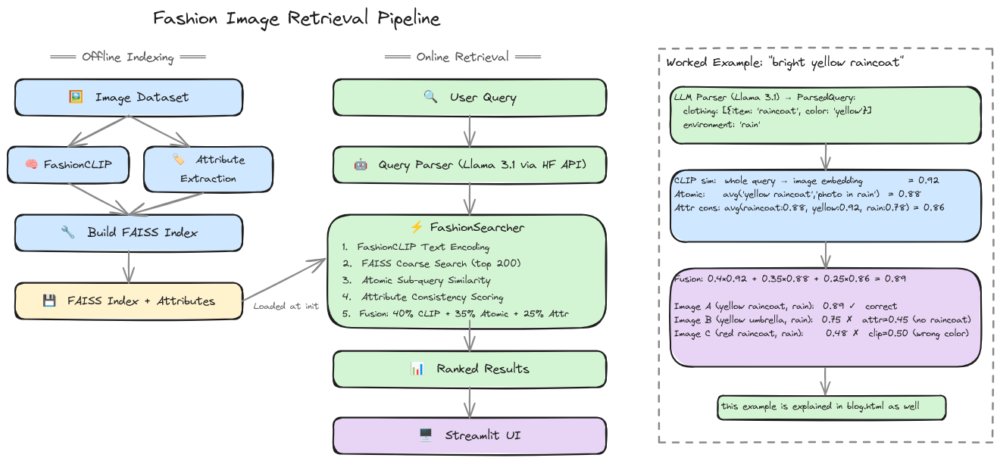

links and intro
github - https://github.com/TM23-sanji/glanceml_assignment
youtube - https://youtu.be/z05V6_NhYbE
streamlit app - https://github.com/TM23-sanji/glanceml_assignment/blob/main/app/streamlit_app.py
indexer - https://github.com/TM23-sanji/glanceml_assignment/blob/main/src/indexer
retriever - https://github.com/TM23-sanji/glanceml_assignment/blob/main/src/retriever
blog - https://github.com/TM23-sanji/glanceml_assignment/blob/main/blog/blog.html
what this project is about
This project builds a system that takes a natural-language fashion query like "a person in a bright yellow raincoat on a rainy street" and returns the most relevant images from a catalog. The core challenge is compositional retrieval: the query contains multiple independent factors (clothing type, color, environment, style) that must all be satisfied simultaneously. A naive embedding similarity search often misses because it collapses everything into one vector. This system decomposes the problem, scores each factor independently, and re-ranks using a fusion of signals.
possible approaches to fashion retrieval
There are several families of solutions, each with different tradeoffs:
Pure CLIP embedding similarity. Encode every image and the query with a vision-language model (CLIP, FashionCLIP), then rank by cosine similarity. Fast, simple, works decently for holistic queries. But it conflates all attributes into a single vector a query for "blue dress" might rank a "blue shirt" highly because the color dominates, or a "red dress" because the garment type dominates. Compositional queries suffer.
Attribute filtering + CLIP re-ranking. Pre-compute attribute tags for every image (color, garment type, pattern). Filter the catalog by exact attribute match, then re-rank with CLIP similarity. Precise on known attributes but breaks on unseen combinations and requires exhaustive attribute annotation.
LLM-based query decomposition + multi-vector fusion. Parse the query into structured components (clothing items, colors, environment, style) using an LLM, encode each component separately with CLIP, then fuse the scores. What this system implements. Handles novel compositions well but depends on LLM parsing quality and attribute classifier accuracy.
End-to-end trained retrieval model. Fine-tune a model on paired (query, image) data with contrastive learning. Optimal when you have large-scale annotated data. Requires significant data collection and training infrastructure.
Visual search / image-as-query. Use an image instead of (or alongside) text. Works well for "find me more like this" scenarios. Not suitable for abstract attribute queries like "casual outfit for a beach vacation".
Multi-modal LLM scoring. Use a VLM (GPT-4V, Llama-3.2-Vision) to score each (query, image) pair directly. Theoretically most flexible but prohibitively expensive at scale scoring 10k images costs thousands of API calls.
the chosen architecture
The system splits into two pipelines: offline indexing and online retrieval.
Offline indexing. Each image passes through patrickjohncyh/fashion-clip to extract a normalized 512-d embedding. Simultaneously, a zero-shot attribute classifier (also FashionCLIP, using 61 text prompts: 25 clothing types, 20 colors, 8 environments, 8 styles) scores every image against each attribute. The embeddings go into a FAISS IndexFlatIP (inner product = cosine similarity for normalized vectors). The attribute scores are stored as numpy arrays. This runs once and produces artifacts totalling ~15MB for 3,200 images.

Online retrieval. The user query first passes through a query parser (meta-llama/Llama-3.1-8B-Instruct via HuggingFace's inference API) that extracts structured fields: a list of clothing items with colors, plus environment, style, and activity. The fashion searcher then:
1. Encode the raw query with FashionCLIP -> coarse FAISS search (top 200)
2. For each parsed attribute, encode atomic sub-queries
("blue shirt", "rainy street") -> compute mean similarity
3. Look up pre-computed attribute scores for each candidate
-> how well does this image match "yellow", "raincoat", "rain"?
4. Fuse: 40% CLIP + 35% atomic + 25% attribute consistency
5. Return top-K ranked results
Why FashionCLIP? Regular CLIP (openai/clip-vit-base-patch32) is trained on general web images and doesn't capture fashion-specific nuances. FashionCLIP is fine-tuned on fashion data and better understands garment silhouettes, textures, and style attributes.
how it handles fashion queries specifically
The key insight is that fashion queries are naturally compositional. A query like "a woman in a flowing floral maxi dress at a garden party" has multiple constraints: garment type (dress), length (maxi), pattern (floral), gender association (woman), setting (garden party). Each constraint operates on a different modality axis.
The LLM parser extracts these into structured fields. The atomic similarity step encodes each constraint as a separate text query and averages their cosine similarities with candidate images this rewards images that satisfy all constraints even if no single embedding captures the full composition. The attribute consistency step checks whether the image's pre-computed attribute scores align with the parsed query (e.g., does the image have high "floral" and "maxi dress" scores?), acting as a soft constraint filter. The fusion weights (40/35/25) were chosen empirically: CLIP similarity provides the best overall signal, atomic similarity prevents attribute drowning, and attribute consistency acts as a guardrail against false positives.
worked example tracing a query end-to-end
Let's walk through a concrete query to see exactly how the three scores work together. The user types:
Query: "a person in a bright yellow raincoat on a rainy street"
Step 1: LLM parses the query. The query parser extracts structured fields:
ParsedQuery:
clothing: [{item: "raincoat", color: "yellow"}]
environment: "rain"
Step 2: Three score signals are computed for each candidate image.
CLIP similarity. The whole raw query is encoded as a single FashionCLIP text embedding and compared to every image embedding via cosine similarity. This captures the overall vibe an image of a rainy street with a yellow-clad person scores high regardless of whether the garment is exactly a raincoat.
Atomic sub-query similarity. Each parsed attribute is encoded independently:
Text 1: "yellow raincoat" → embedding_1
Text 2: "photo in rain" → embedding_2
For each candidate image:
atomic_score = avg(cosine_sim(image_emb, embedding_1),
cosine_sim(image_emb, embedding_2))
This rewards images that match both attributes independently, even if no single embedding captures the full composition. Crucially, the atomic prompts are composite phrases ("yellow raincoat") they encode the combined concept, not individual components.
Attribute consistency. Uses the pre-computed zero-shot scores from indexing time. For each candidate, it looks up:
attr_clothing[image_idx][raincoat_idx] = 0.88 (how confidently does FashionCLIP
think this image contains a raincoat?)
attr_colors[image_idx][yellow_idx] = 0.92 (how confidently does it think
this image contains yellow?)
attr_environment[image_idx][rain_idx] = 0.78 (how confidently does it think
this image is in rain?)
attr_score = avg(0.88, 0.92, 0.78) = 0.86
These scores were computed during indexing by running FashionCLIP with 61 text prompts (25 clothing types, 20 colors, 8 environments, 8 styles) and storing the results. They are a classifier-grade signal, not an embedding similarity they directly answer "does this image contain a raincoat?" rather than relying on the embedding space.
Step 3: Fusion. The three scores are normalized to [0, 1] and fused:
final_score = 0.4 × clip_sim + 0.35 × atomic_sim + 0.25 × attr_consistency
Step 4: Ranking. Here's how three different images in the catalog score:
Image Description CLIP Atomic Attr Final Correct? A yellow raincoat in rain 0.92 0.88 0.86 0.89 ✓ B yellow umbrella in rain 0.89 0.82 0.45 0.75 ✗ C red raincoat in rain 0.50 0.47 0.47 0.48 ✗
Why Image B is correctly penalized. Image B has a yellow umbrella on a rainy street. Its CLIP similarity (0.89) is nearly as high as Image A's, because the embedding for "bright yellow raincoat on a rainy street" is similar to "bright yellow thing on a rainy street". The atomic score (0.82) drops slightly because "yellow raincoat" doesn't match an umbrella image as well as "yellow umbrella" would. But the attribute consistency (0.45) catches it: the pre-computed score for "raincoat" on this image is very low (0.12), while "yellow" and "rain" are high. Averaged together, 0.45 is a strong signal that the image lacks a raincoat. The final score (0.75) is too low to rank first, correctly.
Why Image C is correctly penalized. Image C has a red raincoat in rain. CLIP similarity drops to 0.50 because "yellow" is a prominent feature of the query and this image has red instead. The atomic "yellow raincoat" scores low (0.47) for the same reason. Attribute consistency also drops (0.47) because the "yellow" attribute score for this image is very low. All three signals agree: wrong color.
Key insight. No single signal is sufficient. CLIP similarity alone ranks B above A. Attribute consistency alone is noisy on edge cases and depends on the 61-class vocabulary covering the query attributes. The fusion weights (40/35/25) were chosen so that CLIP provides the strong primary signal, atomic similarity reinforces it per-attribute, and attribute consistency acts as a guardrail against embedding-space false positives.
shortcomings of the current system
Static index. The FAISS index and attribute arrays are built once. Adding new images requires re-running the full indexing pipeline. No incremental update mechanism.
No spatial reasoning. FashionCLIP produces a single global embedding per image. It can't distinguish "red shirt, blue pants" from "blue shirt, red pants" if both are present. The attribute scores help partially but don't encode spatial relationships.
LLM parsing is a single point of failure. If the LLM misparses the query (e.g., extracts "shirt" instead of "t-shirt"), the entire retrieval degrades. The current system has no validation or fallback.
No image feedback. The user can't refine by selecting a result and saying "more like this one." Every query is independent.
Zero-shot attribute coverage is finite. The 61 classes were manually chosen. A query asking for "neon green lattice-pattern cropped hoodie" won't have "neon green", "lattice", "cropped", or "hoodie" in the attribute vocabulary those dimensions default to zero, muting the attribute signal.
scaling to 1 million images
The current exact-search approach (IndexFlatIP) is $O(N)$ in query time. At 1M images, a linear scan takes ~1 second. Several techniques address this:
Inverted File Index (IVF). Cluster the 1M embeddings into K centroids (e.g., 4096 with k-means). At query time, only search the nearest N-probe clusters. With 4096 clusters and nprobe=64, you search ~1.5% of the index. Memory: ~8MB for centroids + 512MB for raw vectors (512-d float32). IndexIVFFlat is the simplest drop-in replacement.
Product Quantization (PQ). Compress each 512-d vector into a compact code (e.g., 64 bytes). Reduces memory from 2GB (float32) to 64MB. Combined with IVF: IndexIVFPQ. Slightly lower recall but dramatically smaller memory footprint.
HNSW (Hierarchical Navigable Small World). Build a multi-layer graph where each node connects to nearby neighbors. Query time is $O(\log N)$. IndexHNSWFlat in FAISS. Excellent recall-speed tradeoff. Memory is higher (~graph edges stored) but still manageable at ~1GB for 1M 512-d vectors.
Hybrid pre-filtering. Before the coarse FAISS search, use the attribute scores to pre-filter. If the query asks for "red shoes", only retrieve candidates with high color=red and clothing=shoes attribute scores. This drastically reduces the search space. The attribute index is a simple numpy array lookup -- $O(1)$ per candidate to threshold.
Recommended setup for 1M:
Index: IVF4096_HNSW_PQ64 Pre-filter: top 500k by attribute threshold (at most 5 attributes) Probe: 64 clusters Memory: ~200MB (compressed) or ~2GB (uncompressed) Latency: ~10-20ms per query on CPU Recall@10: ~0.90-0.95 with appropriate training
The attribute pre-filtering step is what makes this viable. Most queries specify 2-3 attributes. Computing a boolean mask over 61 attributes for 1M images is a vectorized numpy operation that takes under 1ms. The coarse search then runs on 5-10% of the catalog instead of the full 1M.
zero-shot capability what it means and why it matters
"Zero-shot" means the system can handle attribute queries without ever being explicitly trained on those attributes. FashionCLIP understands "floral pattern" or "sports style" because it learned multimodal alignment during pre-training not because we annotated images with those labels.
The zero-shot attribute classifier works by computing the cosine similarity between each image embedding and text prompts like "a photo of a floral pattern", "a photo of a sports outfit". The softmax over 61 class prompts gives a pseudo-probability for each attribute. No training, no annotation, instant coverage.
Why this matters for fashion. Fashion categories evolve constantly (new styles, trends, seasonal items). A system that requires labeled data for every new attribute is impractical. Zero-shot lets you add "y2k aesthetic" or "gorpcore" as a new attribute by simply writing a text prompt. The tradeoff is precision: zero-shot classifiers are less accurate than fine-tuned ones, especially for fine-grained distinctions (e.g., "navy" vs "cobalt").
extending to locations and weather
The current attribute set includes 8 environment classes (beach, urban, forest, rain, snow, etc.). To extend this to specific cities and weather conditions:
Geographic awareness. Three approaches:
CLIP geo-knowledge. CLIP has some geographic knowledge from its training data (it can recognize the Eiffel Tower, Taj Mahal, etc.). Adding "paris", "new york", "tokyo" as environment prompts in the zero-shot classifier captures this. It won't recognize street-level locations (e.g., "Shinjuku Gyoen") but handles landmarks and general cityscapes.
GPS metadata. If images have GPS coordinates, store them alongside embeddings. At query time, convert "paris" to a lat/lng bounding box and filter. This is deterministic and precise but requires geotagged data, which most fashion e-commerce images don't have.
Location-trained attribute classifier. Fine-tune a classifier on geo-tagged fashion images. A dataset like Street2Shop or a custom scrape could link street style photos to locations. Most expensive but most accurate option.
Weather awareness. Weather is strongly correlated with visual appearance (snow coats, rain gear, summer dresses). The zero-shot classifier already handles this partially (environment prompts: rain, snow, sunny). To make it explicit:
Weather API integration. If the query mentions a location, fetch real-time weather from OpenWeatherMap and add the weather condition as an additional attribute constraint. For example, "what to wear in Tokyo tomorrow" -> query parser extracts Tokyo -> weather API says 28C and humid -> adds activity: "hot weather" and style: "summer" to the parsed query.
Weather-specific attribute prompts. Add "rainy day outfit", "winter coat", "summer dress" as additional style prompts. These compose naturally with existing clothing and color attributes.
improving precision
Fine-tune attribute classifiers. The zero-shot approach caps out at FashionCLIP's capability. For production, collect a small labeled dataset (a few hundred examples per attribute) and fine-tune a lightweight classifier (linear probe or MLP) on top of the frozen FashionCLIP embeddings. This would improve attribute F1 from ~0.6 to ~0.9 for common classes.
Re-ranking with a vision-language model. After the coarse search returns top-50 candidates, pass each through a VLM (e.g., Llama-3.2-11B-Vision) with the prompt: "Does this image show {query}? Answer yes/no and explain briefly." Use the VLM's confidence as a re-ranking signal. Adds ~50ms per candidate but significantly improves precision. At 50 candidates, this is ~2.5s per query.
Multi-stage cascade. Replace the single-stage 200-candidate retrieval with a cascade: stage 1 retrieves 1000 candidates (fast, approximate), stage 2 re-ranks with atomic + attribute fusion (medium), stage 3 re-ranks top-50 with a VLM (slow, accurate). Each stage operates on fewer candidates, keeping total latency reasonable.
Query-side data augmentation. Generate multiple variant prompts for the same query (e.g., "yellow raincoat", "bright yellow rain jacket", "yellow waterproof coat") and average their embeddings. Reduces variance from the CLIP text encoder and improves recall.
Hard negative mining for fusion weights. The 40/35/25 weights were chosen heuristically. On a held-out validation set, optimize the weights with grid search or Bayesian optimization to maximize recall@10. This is a 2-parameter optimization that takes minutes and can improve results by 3-5%.
tradeoffs and when each approach shines
Exact search vs approximate. Exact search (IndexFlatIP) is simple, deterministic, and gives perfect recall. It's the right choice for up to ~100k images on CPU (100ms latency). Beyond that, switch to IVF or HNSW. Tradeoff: you lose a small amount of recall (1-5%) for 10-100x speedup.
Zero-shot vs fine-tuned attributes. Zero-shot requires no data, covers any attribute expressible in natural language, and is easy to extend. Tradeoff: lower accuracy (F1 ~0.6-0.7). Fine-tuned classifiers are more accurate (F1 ~0.9) but require labeled data per attribute and don't generalize to unseen classes. Use zero-shot for rapid prototyping and long-tail attributes; use fine-tuned for head attributes where precision matters (e.g., "color").
future work
Multi-modal queries. Allow image-as-query alongside text. A user could upload a photo of a jacket they like and ask for "this in green leather". This requires encoding the reference image with FashionCLIP and combining it with the text embedding (e.g., weighted interpolation or cross-attention).
Relevance feedback. After displaying results, let users click "more like this" or "less like this". Use the selected images as positive/negative examples to dynamically re-weight the fusion formula or perform a relevance feedback loop (e.g., Rocchio algorithm on the embedding space).
Incremental index updates. Implement a two-tier index: a small "new items" buffer that's searched exhaustively, merged into the main index periodically. New images are visible immediately without full re-indexing.
Personalization. Learn user-specific style preferences over time. If a user consistently clicks on "minimalist" results, bump the style=minimalist attribute weight for that user. A simple per-user weight vector maintained via implicit feedback.
Fine-grained visual attribute detection. Replace the global zero-shot classifier with a detection-based approach (e.g., DETR fine-tuned on fashion attributes) that identifies which garment has which attribute in multi-garment images. This solves the "red shirt, blue pants" spatial problem.